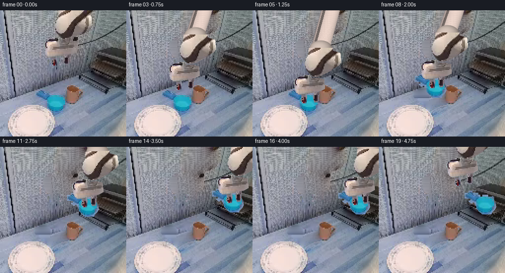
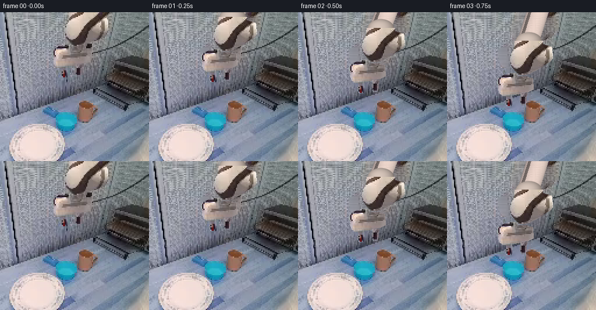

CODING AGENTS AS PIXEL WORLD MODELS
traex/GPT-6.1-Sol · common50_0044
点击播放 · 原生 RGB 像素
此结果可播放，但该运行尚未通过最终提交审核。页面展示不代表评测通过。
逐轮保存的候选
回放视频、检查图与代码变化。
每份候选均可单独播放。实际图片检查记录在下方工具轨迹中。
候选 01播放与检查图
点击播放 · 原生 RGB 像素

展开代码变化
--- 上一保存版本
+++ 本次保存版本
@@ -0,0 +1,182 @@
+"""Fixed-camera, source-textured rigid robotic pick-and-place.
+Only the provided initial RGB image supplies the scene and textures.
+The visible forearm/tool is a rigid body. Its proximal link is a fixed-length
+3-D rod whose orthographic foreshortening changes as the elbow articulates.
+"""
+from pathlib import Path
+import numpy as np
+from PIL import Image, ImageDraw, ImageFilter
+from scipy.ndimage import gaussian_filter, binary_dilation, binary_closing, label
+import artifact_io
+
+ROOT = Path(__file__).resolve().parent
+SRC = np.array(Image.open(ROOT/'first_frame.png').convert('RGB'))
+H,W=SRC.shape[:2]
+Y,X=np.mgrid[:H,:W]
+
+def polygon(points):
+ m=Image.new('L',(W,H)); ImageDraw.Draw(m).polygon(points,fill=255)
+ return np.array(m)/255.
+
+# Anatomical part boundaries, obtained by numeric inspection of source RGB.
+upper=polygon([(120,0),(168,0),(168,5),(184,10),(185,30),(180,36),
+ (169,42),(165,46),(155,51),(145,56),(138,58),(127,58),
+ (122,53),(118,48),(114,42),(112,34),(113,23),(118,14)])
+housing=polygon([(112,55),(122,55),(126,60),(141,61),(151,64),(152,83),
+ (142,88),(127,91),(113,94),(99,94),(94,90),(91,82),
+ (91,76),(89,73),(90,64),(94,61),(105,57)])
+leftfinger=polygon([(105,91),(115,91),(116,101),(114,112),(108,113),(103,107),(105,100)])
+rightfinger=polygon([(130,90),(141,89),(140,101),(138,110),(131,110),(129,103)])
+arm_core=np.maximum(upper,housing)
+arm_mask=np.maximum.reduce([arm_core,leftfinger,rightfinger])
+
+# The original blue vessel is kept intact, including its left-side handle.
+r,g,b=SRC.astype(float).transpose(2,0,1)
+blue=(b-r>25)&(g-r>15)
+body=polygon([(101,168),(124,168),(133,173),(136,180),(137,190),(133,198),
+ (128,203),(126,207),(107,207),(101,202),(96,196),(93,186),(94,176)])>0
+handle=polygon([(80,159),(96,158),(104,165),(105,174),(102,181),(96,187),
+ (84,185),(80,181),(76,178),(71,175),(71,163)])>0
+cup_mask=((body|handle)&blue)
+cup_mask=binary_closing(cup_mask,structure=np.ones((3,3)))
+# Close the opaque body, but leave the opening inside the handle transparent.
+solid=polygon([(101,173),(124,173),(131,178),(135,185),(131,197),
+ (125,202),(121,205),(109,205),(101,200),(96,191),(96,181)])>0
+cup_mask=np.maximum(cup_mask,solid).astype(float)
+
+# Reconstruct only the formerly occluded background. Low-frequency scene light
+# is harmonic inpainted; real adjacent tabletop texture supplies the fine grain.
+def clean_scene(mask):
+ m=binary_dilation(mask>0,iterations=2)
+ a=SRC.astype(float).copy()
+ # Neighbor-cloned texture, corrected for the smooth table illumination.
+ shifted=SRC[Y,np.maximum(24,X-76)].astype(float)
+ low=gaussian_filter(shifted,(5,5,0))
+ noise=shifted-low
+ work=gaussian_filter(SRC.astype(float),(2,2,0))
+ known=~m
+ # Initialize with a subdued table color and diffuse the boundaries inward.
+ work[m]=[142,143,150]
+ for _ in range(850):
+ avg=(np.roll(work,1,0)+np.roll(work,-1,0)+np.roll(work,1,1)+np.roll(work,-1,1))/4
+ work[m]=avg[m]
+ # No wrap-around from the lower plate into the upper scene.
+ work[0,m[0]]=work[1,m[0]]
+ work[-1,m[-1]]=work[-2,m[-1]]
+ a[m]=np.clip(work[m]+noise[m]*.65,0,255)
+ # Feather only a narrow seam.
+ alpha=gaussian_filter(m.astype(float),.65)
+ alpha=np.maximum(alpha,(mask>0).astype(float))
+ return SRC*(1-alpha[:,:,None])+a*alpha[:,:,None]
+
+background=clean_scene(np.maximum(arm_mask,cup_mask))
+# Keep separate backgrounds so the vessel is untouched during the initial reach.
+arm_background=clean_scene(arm_mask)
+
+# Rigid inverse-map sprite placement.
+def transformed_layer(mask, dx,dy, angle=0., pivot=(123,107)):
+ theta=np.deg2rad(angle); c=np.cos(theta); s=np.sin(theta)
+ px,py=pivot
+ # Inverse image affine: q = R^-1 (p - pivot - displacement) + pivot.
+ coeff=(c,s,px-c*(px+dx)-s*(py+dy),
+ -s,c,py+s*(px+dx)-c*(py+dy))
+ rgba=np.dstack([SRC,np.clip(mask*255,0,255).astype(np.uint8)])
+ return np.array(Image.fromarray(rgba,'RGBA').transform((W,H),Image.Transform.AFFINE,coeff,
+ Image.Resampling.BICUBIC)).astype(float)
+
+def composite(canvas,layer):
+ alpha=layer[:,:,3:4]/255.
+ return canvas*(1-alpha)+layer[:,:,:3]*alpha
+
+def transpoint(p,dx,dy,angle):
+ q=np.array(p,float)-[123,107]; t=np.deg2rad(angle)
+ return np.array([[np.cos(t),-np.sin(t)],[np.sin(t),np.cos(t)]])@q+[123+dx,107+dy]
+
+# Analytic shaded cylinder and elbow, behind the source-textured forearm.
+def proximal(canvas,dx,dy,angle):
+ e=transpoint((144,-3),dx,dy,angle)
+ a=np.array([175.,-64.])
+ v=e-a; length=np.linalg.norm(v)
+ rod_length_3d=194.
+ depth=np.sqrt(max(1.,rod_length_3d**2-length**2))
+ # depth is the elbow's z-coordinate; rod length stays invariant.
+ u=v/max(length,1); n=np.array([-u[1],u[0]])
+ along=(X-a[0])*u[0]+(Y-a[1])*u[1]
+ side=(X-a[0])*n[0]+(Y-a[1])*n[1]
+ radius=18.5
+ inside=(along>=0)&(along<=length)&(np.abs(side)<=radius)
+ shade=np.sqrt(np.maximum(0,1-(side/radius)**2))
+ colors=np.stack([143+91*shade-13*(side/radius),
+ 132+79*shade-12*(side/radius),
+ 129+72*shade-10*(side/radius)],-1)
+ # Dark longitudinal mechanical strip and a narrow edge reflection.
+ stripe=(side>10)&(side<15)
+ colors[stripe]*=.56
+ grain=(SRC[Y,np.maximum(0,X-83)].astype(float)-gaussian_filter(SRC.astype(float),(3,3,0))[Y,np.maximum(0,X-83)])*.12
+ colors+=grain
+ alpha=inside.astype(float)
+ alpha=gaussian_filter(alpha,.45)
+ out=canvas*(1-alpha[:,:,None])+np.clip(colors,0,255)*alpha[:,:,None]
+ # Rigid elbow cap masks the original image-edge cut of the arm.
+ e=transpoint((144,1),dx,dy,angle)
+ ex=(X-e[0])/23.5; ey=(Y-e[1])/17
+ rr=ex**2+ey**2
+ aa=np.clip((1-rr)*8,0,1)
+ z=np.sqrt(np.maximum(0,1-rr)); bright=.47+.43*z-.08*ex-.08*ey
+ col=np.stack([235*bright,216*bright,204*bright],-1)
+ out=out*(1-aa[:,:,None])+col*aa[:,:,None]
+ return out
+
+def smooth(u):return u*u*(3-2*u)
+def interpolate(keys,i):
+ for k in range(len(keys)-1):
+ t0,p0=keys[k]; t1,p1=keys[k+1]
+ if t0<=i<=t1:
+ u=smooth((i-t0)/(t1-t0));return np.array(p0)*(1-u)+np.array(p1)*u
+ return np.array(keys[-1][1],float)
+
+# Frame phases: approach, close, vertical lift, transfer, lower, release, retreat.
+arm_keys=[(0,(0,0,0)),(5,(-6,76,0)),(6,(-6,76,0)),
+ (8,(-5,45,0)),(10,(36,24,-2)),(12,(80,-5,-3)),
+ (13,(96,-3,-2)),(15,(96,5,-2)),(16,(96,5,-2)),
+ (19,(50,-34,-4))]
+frames=[]
+for i in range(20):
+ if i==0:
+ frames.append(SRC.copy());continue
+ dx,dy,ang=interpolate(arm_keys,i)
+ holding=6<=i<=15
+ picked=i>=7
+ canvas=(background if picked else arm_background).copy()
+ # Cup translation is locked to the closed tool, never independently drifting.
+ if picked:
+ if i<=15:
+ cupdx=dx+6; cupdy=dy-76
+ else:
+ cupdx=102.;cupdy=-71.
+ # Compact contact shadow, fading on lift and restored on the metal shelf.
+ if i>=13:
+ alpha=np.exp(-(((X-(114+cupdx))/20)**2+((Y-(204+cupdy))/3.3)**2))*0.19
+ canvas*=1-alpha[:,:,None]
+ layer=transformed_layer(cup_mask,cupdx,cupdy,pivot=(114,189))
+ canvas=composite(canvas,layer)
+ # The vessel remains the unchanged source object until securely grasped.
+ if dy>2 or abs(dx)>3:
+ canvas=proximal(canvas,dx,dy,ang)
+ canvas=composite(canvas,transformed_layer(arm_core,dx,dy,ang))
+ # Fingers slide on the tool's fixed parallel rails; the wrist is not warped.
+ closed=3.0 if holding else (3*(1-smooth((i-15)/2)) if 15<i<17 else 0.)
+ theta=np.deg2rad(ang)
+ for mask,direction in [(leftfinger,1),(rightfinger,-1)]:
+ fx=direction*closed*np.cos(theta); fy=direction*closed*np.sin(theta)
+ canvas=composite(canvas,transformed_layer(mask,dx+fx,dy+fy,ang))
+ frames.append(np.clip(np.rint(canvas),0,255).astype(np.uint8))
+
+frames=np.stack(frames)
+assert np.array_equal(frames[0],SRC)
+artifact_io.save(frames,ROOT)
+# Diagnostic products are local generated intermediates, not extra inputs.
+Image.fromarray(np.clip(background,0,255).astype(np.uint8)).save(ROOT/'.tmp/background.png')
+Image.fromarray((np.dstack([arm_mask,cup_mask,arm_core])*255).astype(np.uint8)).save(ROOT/'.tmp/parts.png')
+print('Saved',frames.shape,frames.dtype,'unchanged first frame',np.array_equal(frames[0],SRC))
+print('Frame motion MAE:',[round(float(np.abs(frames[i].astype(float)-frames[i-1]).astype(float).mean()),2) for i in range(1,20)])
候选 02播放与检查图
点击播放 · 原生 RGB 像素


展开代码变化
--- 上一保存版本
+++ 本次保存版本
@@ -19,8 +19,8 @@
return np.array(m)/255.
# Anatomical part boundaries, obtained by numeric inspection of source RGB.
-upper=polygon([(120,0),(168,0),(168,5),(184,10),(185,30),(180,36),
- (169,42),(165,46),(155,51),(145,56),(138,58),(127,58),
+upper=polygon([(120,0),(186,0),(184,6),(188,12),(188,28),(184,34),
+ (177,41),(173,47),(163,52),(145,56),(138,58),(127,58),
(122,53),(118,48),(114,42),(112,34),(113,23),(118,14)])
housing=polygon([(112,55),(122,55),(126,60),(141,61),(151,64),(152,83),
(142,88),(127,91),(113,94),(99,94),(94,90),(91,82),
@@ -81,7 +81,7 @@
coeff=(c,s,px-c*(px+dx)-s*(py+dy),
-s,c,py+s*(px+dx)-c*(py+dy))
rgba=np.dstack([SRC,np.clip(mask*255,0,255).astype(np.uint8)])
- return np.array(Image.fromarray(rgba,'RGBA').transform((W,H),Image.Transform.AFFINE,coeff,
+ return np.array(Image.fromarray(rgba).transform((W,H),Image.Transform.AFFINE,coeff,
Image.Resampling.BICUBIC)).astype(float)
def composite(canvas,layer):
@@ -139,7 +139,7 @@
arm_keys=[(0,(0,0,0)),(5,(-6,76,0)),(6,(-6,76,0)),
(8,(-5,45,0)),(10,(36,24,-2)),(12,(80,-5,-3)),
(13,(96,-3,-2)),(15,(96,5,-2)),(16,(96,5,-2)),
- (19,(50,-34,-4))]
+ (18,(50,-34,-4)),(19,(50,-34,-4))]
frames=[]
for i in range(20):
if i==0:
候选 03播放与检查图
可观测工具轨迹
实际执行的命令与返回图片。
命令 1exit 0
/bin/bash -lc 'ls -la && cat prompt.txt && cat GENERATION_RULES.md'
命令 2exit 0
/bin/bash -lc "cat task_spec.json && cat artifact_io.py && python - <<'PY'
from PIL import Image
import numpy as np
im=np.array(Image.open('first_frame.png').convert('RGB'))
print(im.shape)
# colorized character summary: blue B, gray light +, gray dark :, orange o
small=np.array(Image.fromarray(im).resize((80,64)))
for row in small:
s=''
for r,g,b in row.astype(int):
mx=max(r,g,b); mn=min(r,g,b)
if b>r*1.25 and b>g*1.1: c='B'
elif r>g*1.25 and r>b*1.2:c='R' if r>130 else 'r'
elif r>1.07*b and g>1.06*b:c='o' if mx-mn>25 else '='
else:c=' .:-=+*#%@'[min(9,int((r+g+b)/3/256*10))]
s+=c
print(s)
PY"命令 3exit 0
/bin/bash -lc "python - <<'PY'
import numpy as np
from PIL import Image
from scipy.cluster.vq import kmeans2
im=np.array(Image.open('first_frame.png').convert('RGB'))
cent,lab=kmeans2(im.reshape(-1,3).astype(float),18,minit='++',seed=5,iter=40)
order=np.argsort(cent.mean(1)); remap=np.empty(18,int); remap[order]=np.arange(18)
cent=cent[order]; lab=remap[lab].reshape(256,256)
chars='0123456789ABCDEFGH'
for n,c in enumerate(cent):print(chars[n],np.round(c).astype(int), 'count',np.sum(lab==n))
print('GRID 128x85')
# assign pooled RGB nearest
sm=np.array(Image.fromarray(im).resize((128,85))).astype(float)
l=np.argmin(((sm[:,:,None,:]-cent)**2).sum(-1),-1)
print(' '+''.join(str((i//10)%10) for i in range(128)))
print(' '+''.join(str(i%10) for i in range(128)))
for j,row in enumerate(l):print('%03d '%(j*3)+''.join(chars[n] for n in row))
PY"命令 4exit 0
/bin/bash -lc "python - <<'PY'
import numpy as np
from PIL import Image
im=np.array(Image.open('first_frame.png'))[:,:,:3].astype(int)
# background gray, arm warm, cups blue/copper and shadows
for name,box in [('arm',(85,0,195,120)),('objects',(75,142,177,216)),('rack',(180,70,256,160))]:
x0,y0,x1,y1=box
print('\\n',name, box,'step 2x2')
print(' '+''.join(str((i//10)%10) for i in range(x0,x1,2)))
print(' '+''.join(str(i%10) for i in range(x0,x1,2)))
for y in range(y0,y1,2):
s=''
for x in range(x0,x1,2):
r,g,b=im[y:y+2,x:x+2].mean((0,1)); br=(r+g+b)/3
if b>r+22 and g>r+22: c='Z' if g>145 and b>155 else 'b'
elif r>b+18 and r>g+5: c='H' if br>205 else 'G' if br>180 else 'F' if br>155 else 'c' if br>100 else 'r'
else:c=' .,:;=+*#%'[min(9,int(br/256*10))]
s+=c
print('%03d '%y+s)
print('chromatic warm ranges by row')
for y in range(0,110,2):
m=(im[y,:,0]>im[y,:,2]+15)&(im[y,:,0]>im[y,:,1]+6)&(im[y,:,0]>120)
inds=np.where(m)[0]
if len(inds):print(y, inds.min(),inds.max())
PY"命令 5exit 0
/bin/bash -lc "python - <<'PY'
import numpy as np
from PIL import Image
im=np.array(Image.open('first_frame.png'))[:,:,:3]
# detailed monochrome each 2 pixels
for box in [(85,0,190,116),(75,145,175,215),(180,78,256,156)]:
x0,y0,x1,y1=box
a=np.array(Image.fromarray(im).crop(box).resize(((x1-x0)//2,y1-y0)))
print('\\n',box)
for i,row in enumerate(a):
s=''.join(' .,:;irsXA253hMHGS#9B&@'[min(21,int(p.mean()/256*22))] for p in row)
print('%03d '%(i+y0)+s)
PY"命令 6exit 0
/bin/bash -lc "python - <<'PY'
from PIL import Image
import numpy as np
from scipy.ndimage import label
im=np.array(Image.open('first_frame.png')).astype(int)
blue=(im[:,:,2]>im[:,:,0]+25)&(im[:,:,1]>im[:,:,0]+14)&(im[:,:,1]>60)&(np.indices((256,256))[0]>145)&(np.indices((256,256))[1]<150)
l,n=label(blue)
for k in range(1,n+1):
yy,xx=np.where(l==k)
if len(xx)>6:print('component',len(xx),'bbox',xx.min(),yy.min(),xx.max(),yy.max())
print('blue bbox rows')
for y in range(150,218,2):
ix=np.where(blue[y])[0]
if len(ix):
jumps=np.where(np.diff(ix)>1)[0]; groups=np.split(ix,jumps+1)
print(y,[(int(v.min()),int(v.max())) for v in groups])
print('Arm gray warm ASCII x80-172 y50-114 one cell per 2pixels')
for y in range(50,116,2):
s=''
for x in range(80,174,2):
r,g,b=im[y,x]
if r>b+12 and r>g+5:c='W'
elif max(r,g,b)<40:c='0'
elif max(r,g,b)<65:c='1'
elif max(r,g,b)<90:c='2'
elif max(r,g,b)<120:c='3'
elif max(r,g,b)<150:c='4'
elif max(r,g,b)<180:c='5'
else:c='6'
s+=c
print(y,s)
print('crop RGB sample around blue')
for y in [158,162,166,170,174,178,182,186,190,194,198,202,206,210]:
print(y,[(x,im[y,x].tolist()) for x in range(70,143,6)])
PY"命令 7exit 0
/bin/bash -lc "python - <<'PY'
import numpy as np
from PIL import Image
im=np.array(Image.open('first_frame.png'))
print('identical neighbor rates',np.mean(im[1:]==im[:-1]),np.mean(im[:,1:]==im[:,:-1]))
# Print actual 64 pixel RGB low-res descriptions using categories warmth/gray brightness/cyan
im=im[::4,::4].astype(int)
print('arm exact grid x20:49 y0:29, original coords divided4')
print(' '+''.join(str(x//10) for x in range(20,49)))
print(' '+''.join(str(x%10) for x in range(20,49)))
for y in range(29):
s=''
for r,g,b in im[y,20:49]:
if r>b+12 and r>g+4: c='H' if r>225 else 'G' if r>195 else 'F' if r>165 else 'w' if r>125 else 'r'
else:c='0123456789'[min(9,int((r+g+b)/3/26))]
s+=c
print('%02d '%y+s)
print('cup exact grid x17:39 y36:55')
for y in range(36,56):
s=''
for r,g,b in im[y,17:40]:
if b>r+25 and g>r+14:c='Z' if g>145 else 'b'
elif r>b+12 and r>g+4: c='W' if r>195 else 'c' if r>120 else 'r'
else:c=str(min(9,int((r+g+b)/3/26)))
s+=c
print('%02d '%y+s)
PY"命令 8exit 0
/bin/bash -lc "python - <<'PY'
import numpy as np
from PIL import Image
im=np.array(Image.open('first_frame.png')).astype(int)
print('cup color features per cell 2 pix x68..148 y154..222')
print(' '+''.join(str(i//10%10) for i in range(68,148,2)))
print(' '+''.join(str(i%10) for i in range(68,148,2)))
for y in range(154,222,2):
s=''
for x in range(68,148,2):
r,g,b=im[y:y+2,x:x+2].mean((0,1)); sat=(max(r,g,b)-min(r,g,b))
if b>r+45 and g>r+32:c='C' if g>150 else 'B'
elif b>r+30 and g>r+15: c='b'
elif r>b+15:c='W'
else:c='.' if r>110 else ':'
s+=c
print('%03d '%y+s)
PY"命令 9exit 0
/bin/bash -lc "python - <<'PY'
from PIL import Image
import numpy as np
im=np.array(Image.open('first_frame.png'))
for y in range(52,114,4):
print('y',y,' '.join('%d:%d,%d,%d'%(x,*im[y,x,:3]) for x in range(88,152,4)))
PY"命令 10exit 0
/bin/bash -lc "python - <<'PY'
from PIL import Image
import numpy as np
im=np.array(Image.open('first_frame.png')).astype(int)
for y in range(192,256,4):
m=(im[y,:,0]>175)&(im[y,:,0]>im[y,:,2]+12)&(np.arange(256)<130)
x=np.flatnonzero(m)
print(y,(x.min(),x.max()) if len(x) else None)
PY"命令 11exit 0
/bin/bash -lc "python - <<'PY'
import numpy as np
from PIL import Image
im=np.array(Image.open('first_frame.png')).astype(int)
for y in range(54,98,2):
x0,x1=88,156
print('%03d '%y+''.join('W' if (r>b+9 and r>g+5) else '#' if max(r,g,b)<60 else '.' for r,g,b in im[y,x0:x1:2]))
PY"命令 12exit 0
/bin/bash -lc "cat > generate.py <<'PY'
\"\"\"Fixed-camera, source-textured rigid robotic pick-and-place.
Only the provided initial RGB image supplies the scene and textures.
The visible forearm/tool is a rigid body. Its proximal link is a fixed-length
3-D rod whose orthographic foreshortening changes as the elbow articulates.
\"\"\"
from pathlib import Path
import numpy as np
from PIL import Image, ImageDraw, ImageFilter
from scipy.ndimage import gaussian_filter, binary_dilation, binary_closing, label
import artifact_io
ROOT = Path(__file__).resolve().parent
SRC = np.array(Image.open(ROOT/'first_frame.png').convert('RGB'))
H,W=SRC.shape[:2]
Y,X=np.mgrid[:H,:W]
def polygon(points):
m=Image.new('L',(W,H)); ImageDraw.Draw(m).polygon(points,fill=255)
return np.array(m)/255.
# Anatomical part boundaries, obtained by numeric inspection of source RGB.
upper=polygon([(120,0),(168,0),(168,5),(184,10),(185,30),(180,36),
(169,42),(165,46),(155,51),(145,56),(138,58),(127,58),
(122,53),(118,48),(114,42),(112,34),(113,23),(118,14)])
housing=polygon([(112,55),(122,55),(126,60),(141,61),(151,64),(152,83),
(142,88),(127,91),(113,94),(99,94),(94,90),(91,82),
(91,76),(89,73),(90,64),(94,61),(105,57)])
leftfinger=polygon([(105,91),(115,91),(116,101),(114,112),(108,113),(103,107),(105,100)])
rightfinger=polygon([(130,90),(141,89),(140,101),(138,110),(131,110),(129,103)])
arm_core=np.maximum(upper,housing)
arm_mask=np.maximum.reduce([arm_core,leftfinger,rightfinger])
# The original blue vessel is kept intact, including its left-side handle.
r,g,b=SRC.astype(float).transpose(2,0,1)
blue=(b-r>25)&(g-r>15)
body=polygon([(101,168),(124,168),(133,173),(136,180),(137,190),(133,198),
(128,203),(126,207),(107,207),(101,202),(96,196),(93,186),(94,176)])>0
handle=polygon([(80,159),(96,158),(104,165),(105,174),(102,181),(96,187),
(84,185),(80,181),(76,178),(71,175),(71,163)])>0
cup_mask=((body|handle)&blue)
cup_mask=binary_closing(cup_mask,structure=np.ones((3,3)))
# Close the opaque body, but leave the opening inside the handle transparent.
solid=polygon([(101,173),(124,173),(131,178),(135,185),(131,197),
(125,202),(121,205),(109,205),(101,200),(96,191),(96,181)])>0
cup_mask=np.maximum(cup_mask,solid).astype(float)
# Reconstruct only the formerly occluded background. Low-frequency scene light
# is harmonic inpainted; real adjacent tabletop texture supplies the fine grain.
def clean_scene(mask):
m=binary_dilation(mask>0,iterations=2)
a=SRC.astype(float).copy()
# Neighbor-cloned texture, corrected for the smooth table illumination.
shifted=SRC[Y,np.maximum(24,X-76)].astype(float)
low=gaussian_filter(shifted,(5,5,0))
noise=shifted-low
work=gaussian_filter(SRC.astype(float),(2,2,0))
known=~m
# Initialize with a subdued table color and diffuse the boundaries inward.
work[m]=[142,143,150]
for _ in range(850):
avg=(np.roll(work,1,0)+np.roll(work,-1,0)+np.roll(work,1,1)+np.roll(work,-1,1))/4
work[m]=avg[m]
# No wrap-around from the lower plate into the upper scene.
work[0,m[0]]=work[1,m[0]]
work[-1,m[-1]]=work[-2,m[-1]]
a[m]=np.clip(work[m]+noise[m]*.65,0,255)
# Feather only a narrow seam.
alpha=gaussian_filter(m.astype(float),.65)
alpha=np.maximum(alpha,(mask>0).astype(float))
return SRC*(1-alpha[:,:,None])+a*alpha[:,:,None]
background=clean_scene(np.maximum(arm_mask,cup_mask))
# Keep separate backgrounds so the vessel is untouched during the initial reach.
arm_background=clean_scene(arm_mask)
# Rigid inverse-map sprite placement.
def transformed_layer(mask, dx,dy, angle=0., pivot=(123,107)):
theta=np.deg2rad(angle); c=np.cos(theta); s=np.sin(theta)
px,py=pivot
# Inverse image affine: q = R"'^-1 (p - pivot - displacement) + pivot.
coeff=(c,s,px-c*(px+dx)-s*(py+dy),
-s,c,py+s*(px+dx)-c*(py+dy))
rgba=np.dstack([SRC,np.clip(mask*255,0,255).astype(np.uint8)])
return np.array(Image.fromarray(rgba,'"'RGBA').transform((W,H),Image.Transform.AFFINE,coeff,
Image.Resampling.BICUBIC)).astype(float)
def composite(canvas,layer):
alpha=layer[:,:,3:4]/255.
return canvas*(1-alpha)+layer[:,:,:3]*alpha
def transpoint(p,dx,dy,angle):
q=np.array(p,float)-[123,107]; t=np.deg2rad(angle)
return np.array([[np.cos(t),-np.sin(t)],[np.sin(t),np.cos(t)]])@q+[123+dx,107+dy]
# Analytic shaded cylinder and elbow, behind the source-textured forearm.
def proximal(canvas,dx,dy,angle):
e=transpoint((144,-3),dx,dy,angle)
a=np.array([175.,-64.])
v=e-a; length=np.linalg.norm(v)
rod_length_3d=194.
depth=np.sqrt(max(1.,rod_length_3d**2-length**2))
# depth is the elbow's z-coordinate; rod length stays invariant.
u=v/max(length,1); n=np.array([-u[1],u[0]])
along=(X-a[0])*u[0]+(Y-a[1])*u[1]
side=(X-a[0])*n[0]+(Y-a[1])*n[1]
radius=18.5
inside=(along>=0)&(along<=length)&(np.abs(side)<=radius)
shade=np.sqrt(np.maximum(0,1-(side/radius)**2))
colors=np.stack([143+91*shade-13*(side/radius),
132+79*shade-12*(side/radius),
129+72*shade-10*(side/radius)],-1)
# Dark longitudinal mechanical strip and a narrow edge reflection.
stripe=(side>10)&(side<15)
colors[stripe]*=.56
grain=(SRC[Y,np.maximum(0,X-83)].astype(float)-gaussian_filter(SRC.astype(float),(3,3,0))[Y,np.maximum(0,X-83)])*.12
colors+=grain
alpha=inside.astype(float)
alpha=gaussian_filter(alpha,.45)
out=canvas*(1-alpha[:,:,None])+np.clip(colors,0,255)*alpha[:,:,None]
# Rigid elbow cap masks the original image-edge cut of the arm.
e=transpoint((144,1),dx,dy,angle)
ex=(X-e[0])/23.5; ey=(Y-e[1])/17
rr=ex**2+ey**2
aa=np.clip((1-rr)*8,0,1)
z=np.sqrt(np.maximum(0,1-rr)); bright=.47+.43*z-.08*ex-.08*ey
col=np.stack([235*bright,216*bright,204*bright],-1)
out=out*(1-aa[:,:,None])+col*aa[:,:,None]
return out
def smooth(u):return u*u*(3-2*u)
def interpolate(keys,i):
for k in range(len(keys)-1):
t0,p0=keys[k]; t1,p1=keys[k+1]
if t0<=i<=t1:
u=smooth((i-t0)/(t1-t0));return np.array(p0)*(1-u)+np.array(p1)*u
return np.array(keys[-1][1],float)
# Frame phases: approach, close, vertical lift, transfer, lower, release, retreat.
arm_keys=[(0,(0,0,0)),(5,(-6,76,0)),(6,(-6,76,0)),
(8,(-5,45,0)),(10,(36,24,-2)),(12,(80,-5,-3)),
(13,(96,-3,-2)),(15,(96,5,-2)),(16,(96,5,-2)),
(19,(50,-34,-4))]
frames=[]
for i in range(20):
if i==0:
frames.append(SRC.copy());continue
dx,dy,ang=interpolate(arm_keys,i)
holding=6<=i<=15
picked=i>=7
canvas=(background if picked else arm_background).copy()
# Cup translation is locked to the closed tool, never independently drifting.
if picked:
if i<=15:
cupdx=dx+6; cupdy=dy-76
else:
cupdx=102.;cupdy=-71.
# Compact contact shadow, fading on lift and restored on the metal shelf.
if i>=13:
alpha=np.exp(-(((X-(114+cupdx))/20)**2+((Y-(204+cupdy))/3.3)**2))*0.19
canvas*=1-alpha[:,:,None]
layer=transformed_layer(cup_mask,cupdx,cupdy,pivot=(114,189))
canvas=composite(canvas,layer)
# The vessel remains the unchanged source object until securely grasped.
if dy>2 or abs(dx)>3:
canvas=proximal(canvas,dx,dy,ang)
canvas=composite(canvas,transformed_layer(arm_core,dx,dy,ang))
# Fingers slide on the tool's fixed parallel rails; the wrist is not warped.
closed=3.0 if holding else (3*(1-smooth((i-15)/2)) if 15<i<17 else 0.)
theta=np.deg2rad(ang)
for mask,direction in [(leftfinger,1),(rightfinger,-1)]:
fx=direction*closed*np.cos(theta); fy=direction*closed*np.sin(theta)
canvas=composite(canvas,transformed_layer(mask,dx+fx,dy+fy,ang))
frames.append(np.clip(np.rint(canvas),0,255).astype(np.uint8))
frames=np.stack(frames)
assert np.array_equal(frames[0],SRC)
artifact_io.save(frames,ROOT)
# Diagnostic products are local generated intermediates, not extra inputs.
Image.fromarray(np.clip(background,0,255).astype(np.uint8)).save(ROOT/'.tmp/background.png')
Image.fromarray((np.dstack([arm_mask,cup_mask,arm_core])*255).astype(np.uint8)).save(ROOT/'.tmp/parts.png')
print('Saved',frames.shape,frames.dtype,'unchanged first frame',np.array_equal(frames[0],SRC))
print('Frame motion MAE:',[round(float(np.abs(frames[i].astype(float)-frames[i-1]).astype(float).mean()),2) for i in range(1,20)])
PY
python generate.py"命令 13exit 0
/bin/bash -lc "python - <<'PY'
import numpy as np
from PIL import Image
for file in ['frames/05.png','frames/13.png','frames/19.png','.tmp/background.png']:
im=np.array(Image.open(file)).astype(int)[::4,::4]
print('\\n'+file,'(coordinates /4)')
print(' '+''.join(str(i//10%10) for i in range(64)))
print(' '+''.join(str(i%10) for i in range(64)))
for j,row in enumerate(im):
s=''
for r,g,b in row:
if b>r+45 and g>r+30:c='C' if g>150 else 'b'
elif r>b+16 and r>g+5:c='H' if r>220 else 'G' if r>190 else 'F' if r>155 else 'w' if r>120 else 'r'
else:c=' .:-=+*#%@'[min(9,int((r+g+b)/3/256*10))]
s+=c
print('%02d '%j+s)
PY"命令 14exit 0
/bin/bash -lc "python - <<'PY'
import numpy as np
from PIL import Image
im=np.array(Image.open('first_frame.png')).astype(int)
for box in [(160,0,192,48),(112,32,152,66),(92,88,144,116)]:
print(box)
x0,y0,x1,y1=box
for y in range(y0,y1,2):
print(y,' '.join('%d:%d,%d,%d'%(x,*im[y,x,:3]) for x in range(x0,x1,4)))
PY"命令 15exit 0
/bin/bash -lc "python - <<'PY'
p='generate.py'
s=open(p).read().replace(\"upper=polygon([(120,0),(168,0),(168,5),(184,10),(185,30),(180,36),\\n (169,42),(165,46),(155,51),(145,56),(138,58),(127,58),\", \"upper=polygon([(120,0),(186,0),(184,6),(188,12),(188,28),(184,34),\\n (177,41),(173,47),(163,52),(145,56),(138,58),(127,58),\")
s=s.replace(\"Image.fromarray(rgba,'RGBA')\", \"Image.fromarray(rgba)\")
# Add a small stationary shadow under the rack-contact area and hold after retreat.
s=s.replace(\"(13,(96,-3,-2)),(15,(96,5,-2)),(16,(96,5,-2)),\\n (19,(50,-34,-4))\", \"(13,(96,-3,-2)),(15,(96,5,-2)),(16,(96,5,-2)),\\n (18,(50,-34,-4)),(19,(50,-34,-4))\")
open(p,'w').write(s)
PY
python generate.py
python - <<'PY'
import numpy as np
from PIL import Image
import json
p=np.load('pixels.npz')['pixels']
spec=json.load(open('task_spec.json'))
f=[np.array(Image.open('frames/%02d.png'%i)) for i in range(20)]
assert len(f)==spec['frames'] and all(x.shape==(256,256,3) and x.dtype==np.uint8 for x in f)
assert np.array_equal(f[0],np.array(Image.open('first_frame.png').convert('RGB')))
assert np.array_equal(f[-1],f[-2])
print('Validated: 20 RGB frames, 256x256, 4 fps; exact initial frame and stable final placement.')
print('packed output',p.shape,p.dtype)
PY"保存候选 3 份；完成命令 15 次；可验证图片返回 0 张。原始 API 响应与完整日志保留在本地。